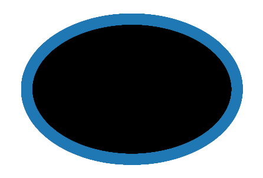

Graph Analytics Exploration¶
https://stackoverflow.com/questions/39274216/visualize-an-rdflib-graph-in-python
https://networkx.org/documentation/stable/reference/algorithms/link_analysis.html
Steps¶
Pull in the OIH RDF graph and load
!pip -q install pydotplus
!pip -q install graphviz
# !pip -q install rdflib
# !pip install -q -e git+https://github.com/RDFLib/rdflib.git#egg=rdflib
!pip -q install pydotplus
!pip -q install mimesis
!pip -q install minio
!pip -q install s3fs
!pip -q install SPARQLWrapper
!pip -q install boto3
!pip -q install 'fsspec>=0.3.3'
!pip -q install rdflib
!pip -q install rdflib-jsonld
!pip -q install PyLD==2.0.2
ERROR: After October 2020 you may experience errors when installing or updating packages. This is because pip will change the way that it resolves dependency conflicts.
We recommend you use --use-feature=2020-resolver to test your packages with the new resolver before it becomes the default.
boto3 1.17.46 requires botocore<1.21.0,>=1.20.46, but you'll have botocore 1.19.52 which is incompatible.
ERROR: After October 2020 you may experience errors when installing or updating packages. This is because pip will change the way that it resolves dependency conflicts.
We recommend you use --use-feature=2020-resolver to test your packages with the new resolver before it becomes the default.
aiobotocore 1.2.2 requires botocore<1.19.53,>=1.19.52, but you'll have botocore 1.20.75 which is incompatible.
import rdflib
from rdflib.extras.external_graph_libs import rdflib_to_networkx_multidigraph
from rdflib.extras.external_graph_libs import rdflib_to_networkx_digraph
import networkx as nx
import matplotlib.pyplot as plt
import gzip
with gzip.open('oceanexperts_graph.nq.gz', 'rb') as f:
file_content = f.read()
g = rdflib.Graph()
g.parse(data = file_content, format="nquads")
G = rdflib_to_networkx_digraph(g)
# G = rdflib_to_networkx_multidigraph(result)
# # Plot Networkx instance of RDF Graph
# pos = nx.spring_layout(G, scale=2)
# edge_labels = nx.get_edge_attributes(G, 'r')b
# #nx.draw_networkx_edge_labels(G, pos, labels=edge_labels)
# nx.draw_networkx_edge_labels(G, pos)
# nx.draw(G, with_labels=True)
pr = nx.pagerank(G,alpha=0.9)
# for key, value in pr.items():
# print(key, ' : ', value)
import pandas as pd
prdf = pd.DataFrame.from_dict(pr, orient='index')
prdf.dtypes
0 float64
dtype: object
prdf.sort_values(by=0,ascending=False, inplace=True,)
prdf.head(20)
| 0 | |
|---|---|
| https://schema.org/Place | 0.058482 |
| https://schema.org/CourseInstance | 0.018446 |
| https://schema.org/Course | 0.016571 |
| UNESCO/IOC Project Office for IODE Wandelaarkaai 7 - Pakhuis 61 B-8400 Oostende Belgium | 0.007863 |
| Russia | 0.007497 |
| UNESCO/IOC Project Office for IODE Wandelaarkaai 7 8400 Oostende Belgium | 0.006203 |
| Wandelaarkaai 7 8400 Oostende Belgium | 0.003761 |
| Belgium | 0.002931 |
| RV Professor Logachev Russia | 0.002624 |
| UNESCO / IOC Project Office for IODE Wandelaarkaai 7 8400 Oostende Belgium | 0.002360 |
| IOC Science and Communication Centre on Harmful Algae, University of Copenhagen University of Copenhagen, Department of Biology Øster Farimagsgade 2D DK-1353 Copenhagen K Denmark | 0.001830 |
| "Ocean Valley", Pragathi Nagar (BO), Nizampet (SO) Hyderabad 500 090 Telangana India | 0.001812 |
| Instituto de Investigaciones Marinas y Costeras José Benito Vives de AndreisCalle 25 No. 2-55, Playa Salguero, Rodadero Santa Marta , Magdalena, Colombia | 0.001812 |
| Kenya Marine and Fisheries Research Institute, Headquater & Mombasa Station PO Box 81651 Mombasa 080100 Kenya | 0.001548 |
| Calle 25 No. 2-55, Playa Salguero, Rodadero Santa Marta D.T.C.H., Magdalena, Colombia | 0.001542 |
| Australia | 0.001271 |
| , Colombia | 0.001271 |
| Institute of Oceanography and Environment Universiti Malaysia Terengganu (UMT), Mengabang Telipot 21030 Kuala Terengganu Terengganu Malaysia | 0.001271 |
| Qingdao China | 0.001018 |
| Wandelaarkaai 7 Oostende Belgium | 0.001018 |
nx.draw_circular(G, with_labels = False)
plt.show() # display

plt.hist([v for k,v in nx.degree(G)])
(array([3.499e+03, 0.000e+00, 0.000e+00, 0.000e+00, 0.000e+00, 2.000e+00,
0.000e+00, 0.000e+00, 0.000e+00, 1.000e+00]),
array([ 1. , 86.5, 172. , 257.5, 343. , 428.5, 514. , 599.5, 685. ,
770.5, 856. ]),
<BarContainer object of 10 artists>)

plt.hist(nx.centrality.betweenness_centrality(G).values())
(array([2200., 0., 0., 0., 0., 858., 0., 20., 0.,
424.]),
array([0.00000000e+00, 3.26437344e-08, 6.52874689e-08, 9.79312033e-08,
1.30574938e-07, 1.63218672e-07, 1.95862407e-07, 2.28506141e-07,
2.61149876e-07, 2.93793610e-07, 3.26437344e-07]),
<BarContainer object of 10 artists>)